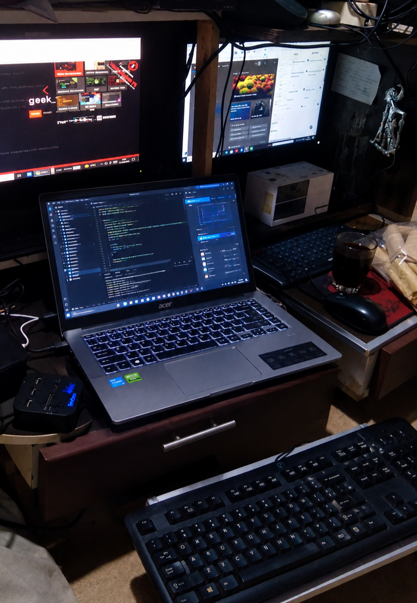
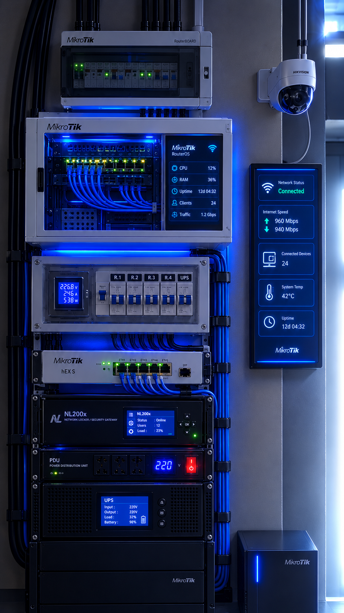

Sistem Keamanan & Pemeliharaan Jaringan — Instalasi Perangkat Lengkap & Terintegrasi
Bukti nyata hasil kerja & peralatan yang saya kelola


Instalasi perangkat jaringan lengkap milik Ikrom Walidaini — dibangun untuk menjamin kestabilan, kecepatan, dan keamanan koneksi dari sumber hingga perangkat pengguna. Menggabungkan perangkat kelas profesional dengan tata letak rapi, terstruktur, dan siap dikembangkan.
Otak pengatur seluruh lalu lintas data — pembagian kecepatan, pemantauan pelanggan, keamanan jaringan.
Penyebaran koneksi terstruktur — kabel tertata rapi, mudah dilacak, cepat diperbaiki jika ada gangguan.
Gerbang pelindung jaringan — penyaringan akses, pemblokiran ancaman, pemantauan aktivitas mencurigakan.
Pasokan listrik terjaga — saat mati lampu, sistem tetap menyala. Perlindungan dari lonjakan arus & petir.
Layar status menampilkan beban CPU, memori, kecepatan internet, jumlah perangkat yang terhubung.
Pemrograman, konfigurasi, pemantauan — semua dikembangkan langsung dari tempat kerja saya.
Survei lokasi → rancangan → pasang → uji coba → serah terima. Mulai dari nol sampai nyala.
Pengecekan rutin, pembersihan, pembaruan sistem, cadangan pengaturan — agar awet & stabil.
Internet lambat? Putus-putus? Dilacak penyebabnya, diperbaiki, diuji sampai lancar kembali.
Pemblokiran akses asing, sandi kuat, pemisahan jaringan tamu, perlindungan dari serangan luar.
Tambah pelanggan, pasang pemancar baru, tarik kabel, sambungkan titik yang belum terjangkau.
Selain jaringan — saya juga bikin website, sistem pantauan, dan aplikasi khusus untuk kebutuhanmu.
Butuh instalasi jaringan, website, atau konsultasi? Siap melayani!
💬 Kirim Pesan WhatsApp